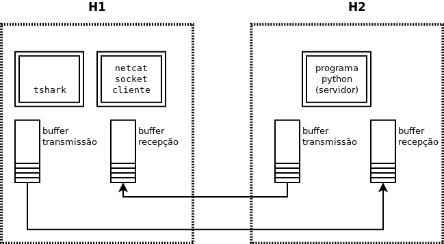
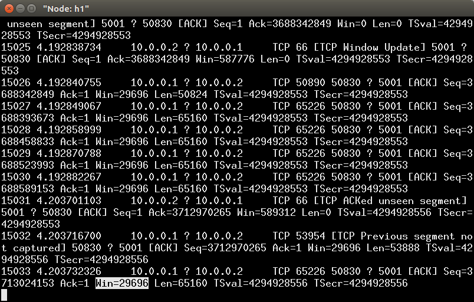

Redes de Computadores 2 - Prof. Ricardo da Rocha
</p>
<h1>Laboratório: Controle de Fluxo no TCP</h1>
<h1>Objetivos</h1>
<ul>
<li>Experimentar na prática o funcionameto do controle de fluxo do TCP a partir de inspeção de pacotes pelo Wireshark/Tshark.</li>
</ul>
<h1>Recursos</h1>
<h3>Programas Cliente e Servidor de População/Consumo de Pacotes</h3>
<p>Para facilitar os experimentos deste laboratório são fornecidos dois programas Python que permitem controlar o envio e consumo de massa de bytes transmitidos via sockets TCP.</p>
<ul>
<li><a href="codigo/socket-transmite-blocos.py">codigo/socket-transmite-blocos.py</a>: permite o envio de uma quantidade de bytes (múltipla de 1024) indicada pelo usuário em uma conexão TCP.
<ul>
<li>Com esse programa, o aluno poderá controlar as tentativas de uma aplicação em preenchar as janelas TCP de um socket destino.</li>
</ul></li>
<li><a href="codigo/socket-le-parcial.py">codigo/socket-le-parcial.py</a>: permite a leitura de um socket TCP limitada pelo número de bytes indicados pelo usuário. Os bytes recebidos são descartados.
<ul>
<li>Com esse programa, o aluno poderá controlar a velocidade em que uma aplicação de destino lê bytes que chegam por um socket TCP e, consequentemente, a liberação ou preenchimento dos buffers de recepção TCP.</li>
</ul></li>
</ul>
<p>Ambos os programas exigem que se indique no código os endereços dos sockets a serem utilizados.</p>
<p>Antes de utilizá-lo, teste ambos os programas com o netcat, para se certificar que compreendeu o seu funcionamento.</p>
<h1>Tarefas</h1>
<p>No mininet ou na sua estação, configure o cenário de testes da figura, usando os programas da seção anterior para atuarem como o programas cliente e servidores do cenário. O <strong>TShark</strong> (ou Wireshark) deverá ser utilizado para inspecionar os pacotes TCP que saem e chegam na estação onde se encontra o <strong>cliente</strong> (que será o programa que transmitirá os pacotes).</p>
<p></p>
<p>Essencialmente, nesse cenário de testes você deverá controlar como um dos lados transmite bytes e como o outro consome bytes, e a resultante troca de pacotes TCP, focando a análise no controle de fluxo feito pelo TCP que se baseia no campo <code>Win</code> (janela de recepção) dos pacotes TCP, como exposto na figura abaixo.</p>
<p></p>
<p>Sugere-se a utilização do seguinte método durante o experimento: </p>
<ul>
<li>Armazenar os pacotes analisados pelo TShark em um arquivo (usar a opção <code>-w</code>), junto com a opção <code>-P</code> para exibir os pacotes interpretados no terminal.</li>
<li>Controle a execução do experimento por meio da inspeção dos pacotes exibidos no terminal. <strong>Anote</strong> o número dos pacotes em que as situações desejadas no experimento ocorrem.</li>
<li>Após o término do experimento, utilize o TShark novamente para inspecionar o arquivo gerado e obter as informações que devem acompanhar o relatório deste experimento. Se o experimento for feito em máquina virtual, faça essa etapa na sua estação hospedeira ou onde ficar mais confortável.</li>
</ul>
<h3>Questões</h3>
<p>O seu experimento deve ser executado para responder às questões abaixo. Quando necessário, as respostas devem ser justificadas pelo conteúdo do(s) pacote(s) TCP analisados pelo TShark que permitiram a conclusão.</p>
<ol>
<li>Quantos pacotes TCP foram enviados para transmitir 1024 bytes e 64kbytes e 65kbytes? (<strong>dica</strong>: veja contagem de pacotes)</li>
<li>Qual o tamanho da janela (na estação-alvo H2 da figura) no início da conexão?</li>
<li>A janela de recepção nessa estação aumentou à medida em que bytes eram transmitidos? Se sim, qual foi o valor máximo que ela atingiu?</li>
<li>Quantos bytes foram enviados para que a janela ficasse cheia na estação-alvo?</li>
<li>Quando a janela ficou cheia, o que ocorria no processo transmissor ao tentar transmitir mais bytes?</li>
<li>Quanto a janela está cheia e o processo na estação-alvo lê o buffer, o que acontece em termos de trocas de mensagens TCP entre os dois?</li>
</ol>
<h2>Submissão do laboratório</h2>
<p>A entrega do relatório deve ser pelo github classroom, com o qual vocês terão uma área indicada a partir de email enviado para vocês. Esse relatório deve ser entregue em até 7 dias.</p>
<p>Todos os arquivos colocados no github devem estar codificados em <code>UTF-8</code> e devem ser arquivos de texto, seguindo a seguinte estrutura</p>
<pre><code> README.md - deve conter uma linha com o seu nome
Lab3.2.1-6-resp.txt - deve contar as respostas às perguntas de 1 a 6
Lab3.2.2.txt - pacotes TCP coletados que fundamentam a resposta (2)
Lab3.2.3.txt - pacotes TCP coletados que fundamentam a resposta (3)
Lab3.2.6.txt - pacotes TCP coletados que fundamentam a resposta (6)
</code></pre>
<p>O arquivo <code>Lab3.2.1-6-resp.txt</code> deve atender ao seguinte formato:</p>
<pre><code> Resposta 1: &lt;texto da sua resposta&gt;
Resposta 2: &lt;texto da sua resposta&gt;
Resposta 3: &lt;texto da sua resposta&gt;
Resposta 4: &lt;texto da sua resposta&gt;
Resposta 5: &lt;texto da sua resposta&gt;
Resposta 6: &lt;texto da sua resposta&gt;
</code></pre>
<h2>Uso do TShark ou Wireshark</h2>
<p>Para usar o TShark no experimento, acesse a documentação resumida mantida no <a href="lab-3-0-tshark.html">laboratório 3.0</a> ou a <a href="https://www.wireshark.org/docs/man-pages/tshark.html">documentação oficial da ferramenta</a></p>
<p>Espera neste experimento que sejam utilizadas as seguintes opções da ferramenta:</p>
<pre><code> -P ou --print: mostra a saída no terminal, mesmo que direcionado para arquivo
-w &lt;arquivo&gt;: direciona a saída em arquivo (para uso posterior)
-r &lt;arquivo&gt; posterior leitura pode ser feita com
-Y &lt;filtro&gt;: filtro de visualização de conteúdo. Exemplo: "ip.src == 10.0.0.1"
</code></pre>
<h2>Estrutura de um pacote TCP</h2>
<pre><code> 0 1 2 3
0 1 2 3 4 5 6 7 8 9 0 1 2 3 4 5 6 7 8 9 0 1 2 3 4 5 6 7 8 9 0 1
+-+-+-+-+-+-+-+-+-+-+-+-+-+-+-+-+-+-+-+-+-+-+-+-+-+-+-+-+-+-+-+-+
| Source Port | Destination Port |
+-+-+-+-+-+-+-+-+-+-+-+-+-+-+-+-+-+-+-+-+-+-+-+-+-+-+-+-+-+-+-+-+
| Sequence Number |
+-+-+-+-+-+-+-+-+-+-+-+-+-+-+-+-+-+-+-+-+-+-+-+-+-+-+-+-+-+-+-+-+
| Acknowledgment Number |
+-+-+-+-+-+-+-+-+-+-+-+-+-+-+-+-+-+-+-+-+-+-+-+-+-+-+-+-+-+-+-+-+
| Data | |U|A|P|R|S|F| |
| Offset| Reserved |R|C|S|S|Y|I| Window |
| | |G|K|H|T|N|N| |
+-+-+-+-+-+-+-+-+-+-+-+-+-+-+-+-+-+-+-+-+-+-+-+-+-+-+-+-+-+-+-+-+
| Checksum | Urgent Pointer |
+-+-+-+-+-+-+-+-+-+-+-+-+-+-+-+-+-+-+-+-+-+-+-+-+-+-+-+-+-+-+-+-+
| Options | Padding |
+-+-+-+-+-+-+-+-+-+-+-+-+-+-+-+-+-+-+-+-+-+-+-+-+-+-+-+-+-+-+-+-+
| data |
+-+-+-+-+-+-+-+-+-+-+-+-+-+-+-+-+-+-+-+-+-+-+-+-+-+-+-+-+-+-+-+-+
</code></pre>
<p>